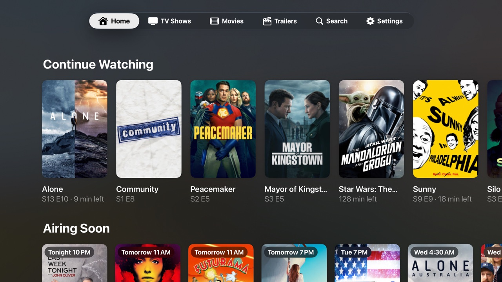
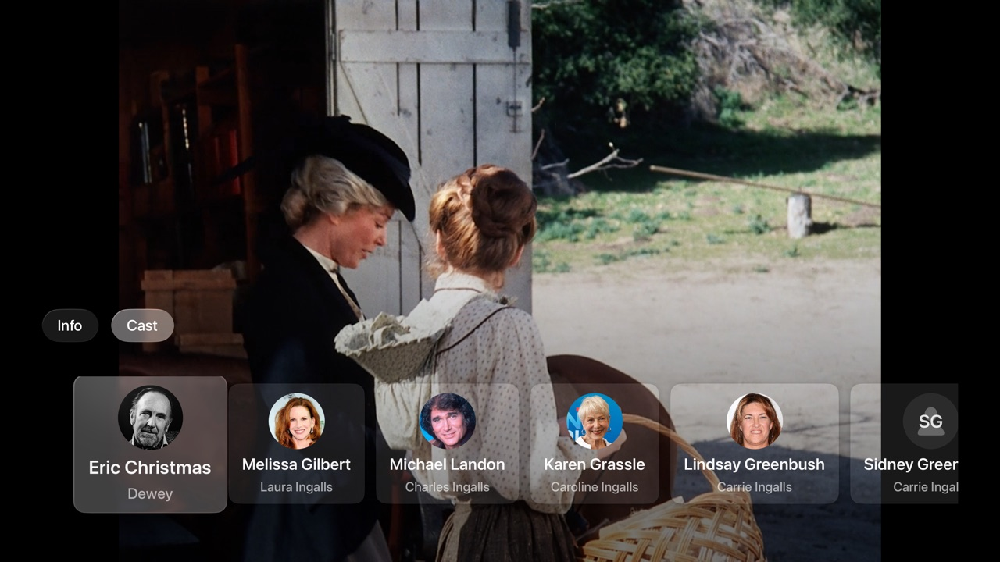
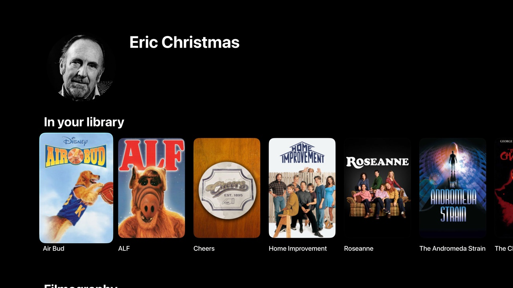
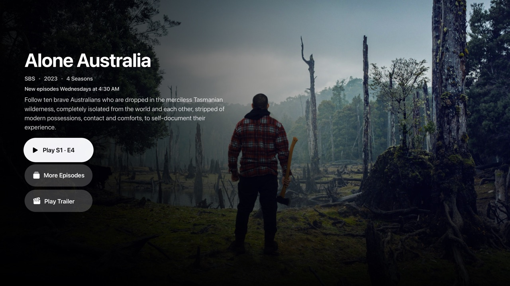
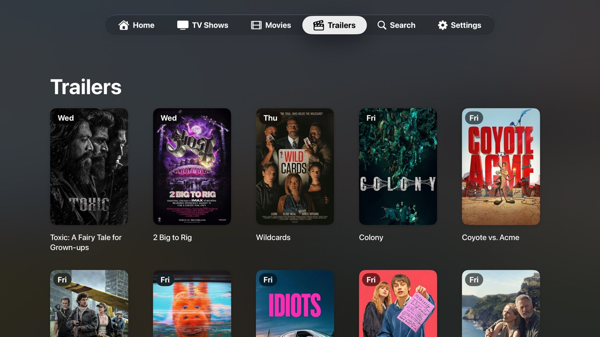

For Apple TV
Airdate
Your next episode. Right at home.
A native Apple TV app for your Plex library. Every episode plays at the same volume, the cast is one swipe away, and you always know what airs next.
In beta Now in beta on TestFlight.
Follow development on X
Volume Levelling Beta
Put the remote down.
One episode whispers, the next one shouts. Airdate evens out the volume from one episode and movie to the next, so you can stop reaching for the remote.
- Uses your Plex server’s own loudness analysis when it has one
- Otherwise measures upcoming episodes in the background while you browse, never during playback
- Turns loud titles down to match, and never changes the volume mid-episode
Turn it on in Settings > Playback.
In the player
Wait, who is that?
Swipe down during an episode and open the Cast tab to see who’s in it. Select a face to open their page and everything of theirs in your library, then head right back to the paused episode.




Make yourself comfortable.
The familiar library you love, with the little things taken care of.
- Volume Levelling: Loud episodes are turned down to match their neighbours, using Plex’s own loudness analysis or Airdate’s background measurement
- Cast in the Player: Swipe down mid-episode to see the cast, then jump to anyone’s page and filmography without losing your place
- Air Dates Everywhere: An "Airing Soon" row on Home, air-date badges across your library, and exactly when new episodes arrive right on every show page
- Auto-Skip & Auto-Advance: Intros and credits skip themselves, then playback flows into the next episode with a countdown — with per-show overrides
- Trailers: Browse upcoming theatrical movies as a poster wall, sorted by release date
- Truly Native: Built with Swift and SwiftUI for tvOS, with smooth AVPlayer playback and watch progress synced to your Plex account
Take a closer look.
Select a screenshot to see it full size.





Airdate requires a Plex account and access to a Plex Media Server. Airdate is an independent project and is not affiliated with, endorsed by, or sponsored by Plex, Inc.
Have something in mind?
Questions, feedback, and ideas are always welcome.